Vamos usar a base de dados abdom. O objetivo é modelar a circunferência abdominal em função da idade gestacional. Pelo gráfico, condicional à idade gestacional a circunferência abdominal aparenta ter distribuição simétrica. No entanto, fica evidente que a dispersão não é constante, aumentando conforme a idade gestacional.
data(abdom)
par(cex = 1.25, las = 1, mar = c(5,4,2,2))
plot(y ~ x, data = abdom, col = 'blue',
xlab = 'Idade gestacional',
ylab = 'Circunferência abdominal')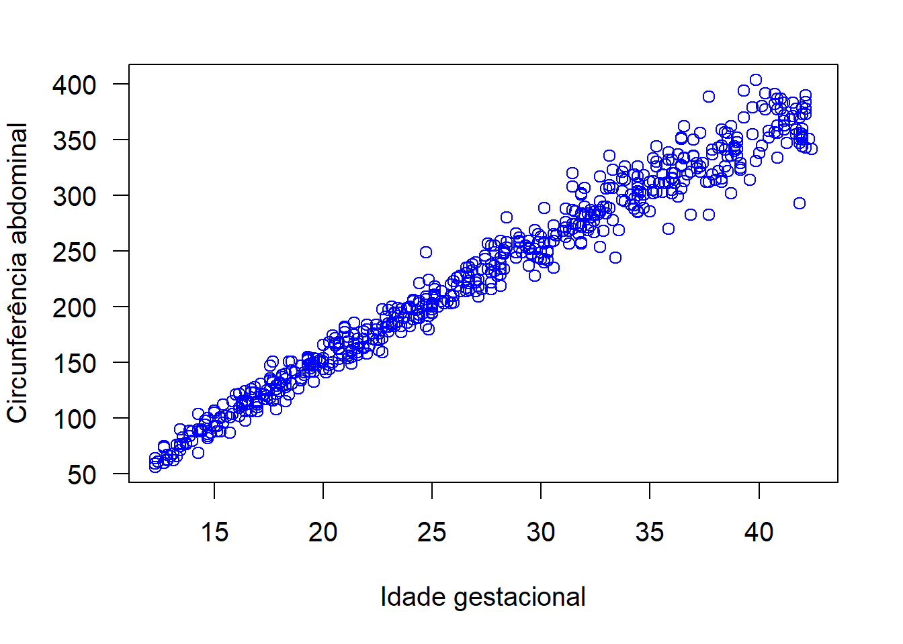
Vamos começar pelo ajuste de um modelo com resposta normal, inserindo a covariável (idade gestacional) apenas no preditor da média.
## GAMLSS-RS iteration 1: Global Deviance = 5002.453
## GAMLSS-RS iteration 2: Global Deviance = 5002.453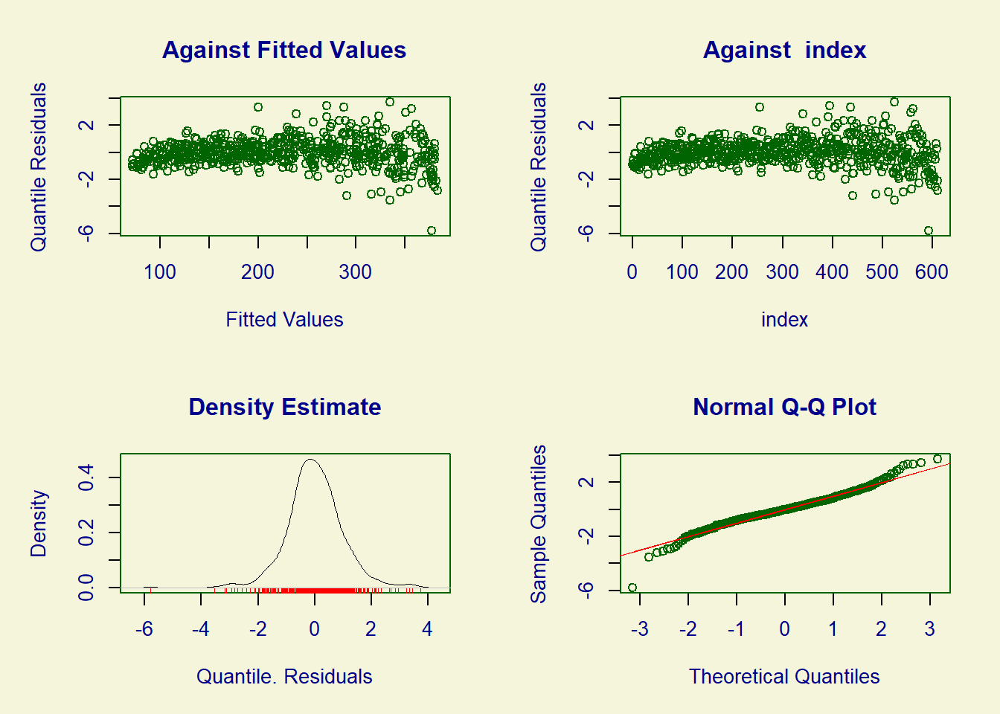
## ******************************************************************
## Summary of the Quantile Residuals
## mean = -7.465852e-17
## variance = 1.001642
## coef. of skewness = -0.1475323
## coef. of kurtosis = 5.909441
## Filliben correlation coefficient = 0.983555
## ******************************************************************plot(resid(ajusteNO1) ~ fitted(ajusteNO1), col = 'blue')
lines(lowess(resid(ajusteNO1) ~ fitted(ajusteNO1)), col = 'red', lwd = 2)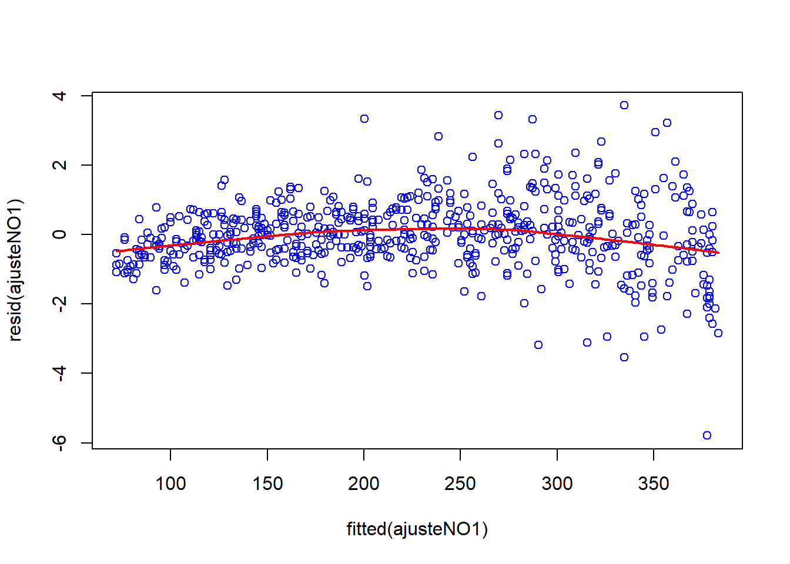
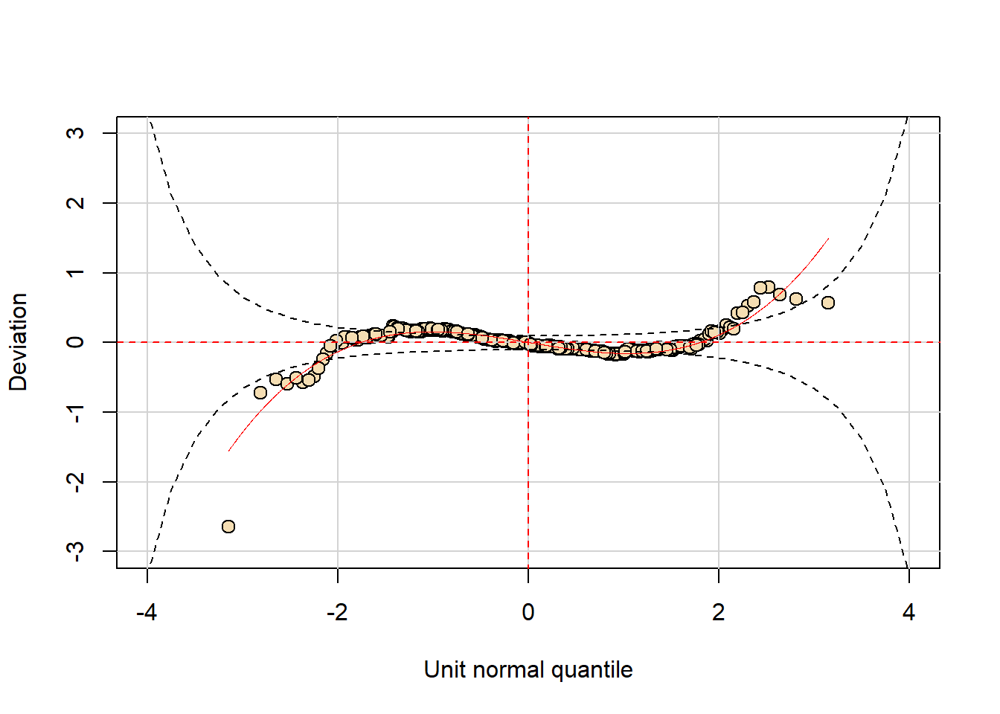
Os resíduos NÃO apresentam distribuição normal e não têm variância constante. Além disso, o gráfico de resíduos versus valores ajustados apresenta certa curvatura. Vamos tentar corrigir esses problemas:
## GAMLSS-RS iteration 1: Global Deviance = 4793.642
## GAMLSS-RS iteration 2: Global Deviance = 4792.823
## GAMLSS-RS iteration 3: Global Deviance = 4792.823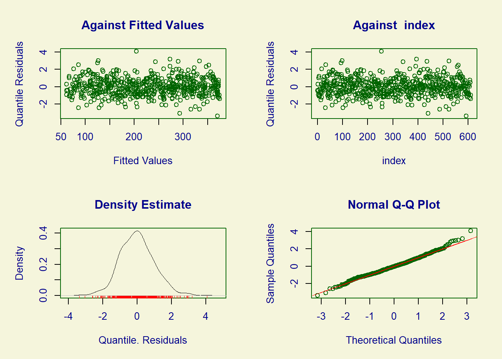
## ******************************************************************
## Summary of the Quantile Residuals
## mean = -0.0001488904
## variance = 1.001642
## coef. of skewness = 0.2447903
## coef. of kurtosis = 3.635106
## Filliben correlation coefficient = 0.9963117
## ******************************************************************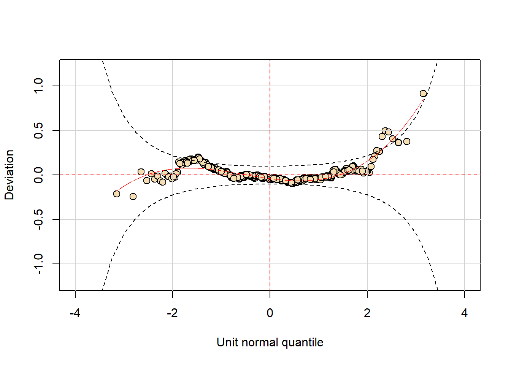
Alguns dos problemas diagnosticados no primeiro ajuste foram corrigidos (variância não constante e tendência nos resíduos). No entanto, o worm plot indica que o modelo ainda apresenta problemas de ajuste.
O próximo passo é trocar a distribuição. Ao invés da Normal vamos considerar a Power Exponential (PE).
A distribuição PE tem três parâmetros:
- \(\mu\) é a média
- \(\sigma\) é um parâmetro de escala
- \(\nu\) controla a curtose.
A distribuição PE tem como casos particulares a distribuição de Laplace (quando \(\nu\) = 1), a normal (quando \(\nu\) = 2) e a uniforme (quando \(\nu\) vai a infinito).
Vamos modelar a média (\(\mu\)) e a dispersão (\(\sigma\)) com base na covariável. Neste primeiro momento, não vamos inserir termos não paramétricos (suavizadores) ao modelo. Vamos analisar o perfil da deviance para \(\nu\). Começamos pelo ajuste de um modelo com resposta normal, para comparação.
Agora, o ajuste do modelo com resposta PE.
## GAMLSS-RS iteration 1: Global Deviance = 4797.474
## GAMLSS-RS iteration 2: Global Deviance = 4787.289
## GAMLSS-RS iteration 3: Global Deviance = 4787.288## ******************************************************************
## Family: c("PE", "Power Exponential")
##
## Call: gamlss(formula = y ~ poly(x, 2, raw = TRUE), sigma.formula = ~x,
## family = PE, data = abdom)
##
## Fitting method: RS()
##
## ------------------------------------------------------------------
## Mu link function: identity
## Mu Coefficients:
## Estimate Std. Error t value Pr(>|t|)
## (Intercept) -97.23838 8.68465 -11.197 < 2e-16 ***
## poly(x, 2, raw = TRUE)1 13.68755 0.74070 18.479 < 2e-16 ***
## poly(x, 2, raw = TRUE)2 -0.06065 0.01434 -4.229 2.71e-05 ***
## ---
## Signif. codes: 0 '***' 0.001 '**' 0.01 '*' 0.05 '.' 0.1 ' ' 1
##
## ------------------------------------------------------------------
## Sigma link function: log
## Sigma Coefficients:
## Estimate Std. Error t value Pr(>|t|)
## (Intercept) 1.378003 0.106881 12.89 <2e-16 ***
## x 0.041488 0.003728 11.13 <2e-16 ***
## ---
## Signif. codes: 0 '***' 0.001 '**' 0.01 '*' 0.05 '.' 0.1 ' ' 1
##
## ------------------------------------------------------------------
## Nu link function: log
## Nu Coefficients:
## Estimate Std. Error t value Pr(>|t|)
## (Intercept) 0.50002 0.08271 6.045 2.61e-09 ***
## ---
## Signif. codes: 0 '***' 0.001 '**' 0.01 '*' 0.05 '.' 0.1 ' ' 1
##
## ------------------------------------------------------------------
## No. of observations in the fit: 610
## Degrees of Freedom for the fit: 6
## Residual Deg. of Freedom: 604
## at cycle: 3
##
## Global Deviance: 4787.288
## AIC: 4799.288
## SBC: 4825.769
## ******************************************************************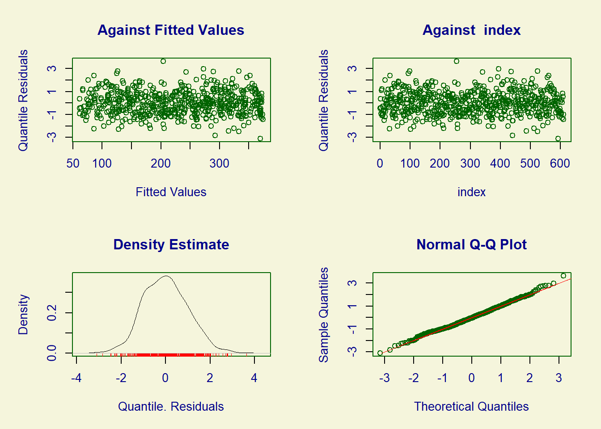
## ******************************************************************
## Summary of the Quantile Residuals
## mean = 0.0107506
## variance = 1.0009
## coef. of skewness = 0.1954367
## coef. of kurtosis = 3.097244
## Filliben correlation coefficient = 0.9980143
## ******************************************************************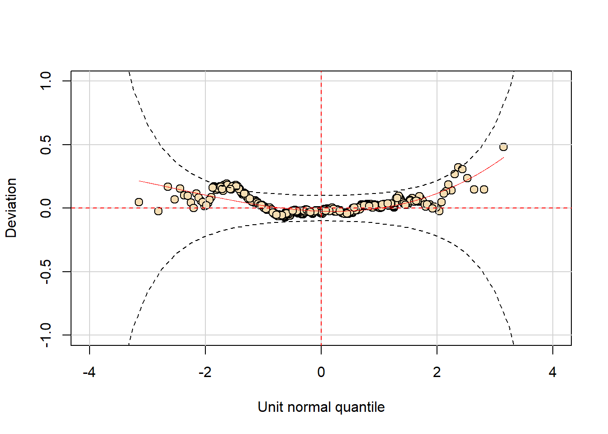
## df AIC
## ajustePE 6 4799.288
## ajusteNO2 5 4802.823O modelo com resposta PE produz menor AIC. Vamos prosseguir com ele.
## (Intercept) poly(x, 2, raw = TRUE)1 poly(x, 2, raw = TRUE)2
## -97.23838356 13.68754934 -0.06064768## (Intercept) x
## 1.37800315 0.04148813Vamos ver diferentes formas de extrair erros padrões para as estimativas dos parâmetros de regressão.
## (Intercept) poly(x, 2, raw = TRUE)1
## (Intercept) 75.42309099831 -6.405779377024
## poly(x, 2, raw = TRUE)1 -6.40577937702 0.548635900277
## poly(x, 2, raw = TRUE)2 0.12283305114 -0.010586697668
## (Intercept) -0.00057753245 -0.000024626887
## x 0.00003917985 -0.000001425856
## (Intercept) -0.04454757176 0.004302646313
## poly(x, 2, raw = TRUE)2 (Intercept) x
## (Intercept) 1.228331e-01 -0.000577532455 3.917985e-05
## poly(x, 2, raw = TRUE)1 -1.058670e-02 -0.000024626887 -1.425856e-06
## poly(x, 2, raw = TRUE)2 2.056904e-04 0.000000433212 2.891564e-08
## (Intercept) 4.332120e-07 0.011423525386 -3.804617e-04
## x 2.891564e-08 -0.000380461663 1.389839e-05
## (Intercept) -8.336518e-05 -0.001102518444 2.891460e-05
## (Intercept)
## (Intercept) -0.04454757176
## poly(x, 2, raw = TRUE)1 0.00430264631
## poly(x, 2, raw = TRUE)2 -0.00008336518
## (Intercept) -0.00110251844
## x 0.00002891460
## (Intercept) 0.00684116996Da linha 1 à linha 3 temos os valores referentes ao parâmetro de locação (\(\mu\)); nas linhas 4 e 5 aqueles referentes a \(\sigma\) (escala). Na linha 6, finalmente, a estimativa referente ao parâmetro de forma (\(\nu\)).
vars <- diag(V) # Variâncias assintóticas dos beta's chapéus.
sqrt(vars) # Erros padrões assintóticos.## (Intercept) poly(x, 2, raw = TRUE)1 poly(x, 2, raw = TRUE)2
## 8.684646855 0.740699602 0.014341912
## (Intercept) x (Intercept)
## 0.106880893 0.003728054 0.082711365## ******************************************************************
## Family: c("PE", "Power Exponential")
##
## Call: gamlss(formula = y ~ poly(x, 2, raw = TRUE), sigma.formula = ~x,
## family = PE, data = abdom)
##
## Fitting method: RS()
##
## ------------------------------------------------------------------
## Mu link function: identity
## Mu Coefficients:
## Estimate Std. Error t value Pr(>|t|)
## (Intercept) -97.23838 8.68465 -11.197 < 2e-16 ***
## poly(x, 2, raw = TRUE)1 13.68755 0.74070 18.479 < 2e-16 ***
## poly(x, 2, raw = TRUE)2 -0.06065 0.01434 -4.229 0.0000271 ***
## ---
## Signif. codes: 0 '***' 0.001 '**' 0.01 '*' 0.05 '.' 0.1 ' ' 1
##
## ------------------------------------------------------------------
## Sigma link function: log
## Sigma Coefficients:
## Estimate Std. Error t value Pr(>|t|)
## (Intercept) 1.378003 0.106881 12.89 <2e-16 ***
## x 0.041488 0.003728 11.13 <2e-16 ***
## ---
## Signif. codes: 0 '***' 0.001 '**' 0.01 '*' 0.05 '.' 0.1 ' ' 1
##
## ------------------------------------------------------------------
## Nu link function: log
## Nu Coefficients:
## Estimate Std. Error t value Pr(>|t|)
## (Intercept) 0.50002 0.08271 6.045 2.61e-09 ***
## ---
## Signif. codes: 0 '***' 0.001 '**' 0.01 '*' 0.05 '.' 0.1 ' ' 1
##
## ------------------------------------------------------------------
## No. of observations in the fit: 610
## Degrees of Freedom for the fit: 6
## Residual Deg. of Freedom: 604
## at cycle: 3
##
## Global Deviance: 4787.288
## AIC: 4799.288
## SBC: 4825.769
## ******************************************************************Observe que são os mesmos valores retornados pelo summary.
## ******************************************************************
## Family: c("PE", "Power Exponential")
##
## Call: gamlss(formula = y ~ poly(x, 2, raw = TRUE), sigma.formula = ~x,
## family = PE, data = abdom)
##
## Fitting method: RS()
##
## ------------------------------------------------------------------
## Mu link function: identity
## Mu Coefficients:
## Estimate Std. Error t value Pr(>|t|)
## (Intercept) -97.23838 16.71717 -5.817 9.74e-09 ***
## poly(x, 2, raw = TRUE)1 13.68755 1.42367 9.614 < 2e-16 ***
## poly(x, 2, raw = TRUE)2 -0.06065 0.02741 -2.212 0.0273 *
## ---
## Signif. codes: 0 '***' 0.001 '**' 0.01 '*' 0.05 '.' 0.1 ' ' 1
##
## ------------------------------------------------------------------
## Sigma link function: log
## Sigma Coefficients:
## Estimate Std. Error t value Pr(>|t|)
## (Intercept) 1.378003 0.104617 13.17 <2e-16 ***
## x 0.041488 0.003771 11.00 <2e-16 ***
## ---
## Signif. codes: 0 '***' 0.001 '**' 0.01 '*' 0.05 '.' 0.1 ' ' 1
##
## ------------------------------------------------------------------
## Nu link function: log
## Nu Coefficients:
## Estimate Std. Error t value Pr(>|t|)
## (Intercept) 0.5000 0.0858 5.827 9.16e-09 ***
## ---
## Signif. codes: 0 '***' 0.001 '**' 0.01 '*' 0.05 '.' 0.1 ' ' 1
##
## ------------------------------------------------------------------
## No. of observations in the fit: 610
## Degrees of Freedom for the fit: 6
## Residual Deg. of Freedom: 604
## at cycle: 3
##
## Global Deviance: 4787.288
## AIC: 4799.288
## SBC: 4825.769
## ******************************************************************## (Intercept) poly(x, 2, raw = TRUE)1
## (Intercept) 5.051075163 112.7704853
## poly(x, 2, raw = TRUE)1 112.770485316 2784.5065724
## poly(x, 2, raw = TRUE)2 2786.165993541 75935.2209368
## (Intercept) -0.003503203 -0.0569861
## x -0.068386385 -1.1756584
## (Intercept) -4.082785097 -91.6175015
## poly(x, 2, raw = TRUE)2 (Intercept) x
## (Intercept) 2786.16599 -0.003503203 -0.06838638
## poly(x, 2, raw = TRUE)1 75935.22094 -0.056986096 -1.17565844
## poly(x, 2, raw = TRUE)2 2248452.93415 11.943640857 193.84450820
## (Intercept) 11.94364 1005.759785585 27435.87581006
## x 193.84451 27435.875810056 821009.38663132
## (Intercept) -2215.29586 46.286843371 954.16036152
## (Intercept)
## (Intercept) -4.082785
## poly(x, 2, raw = TRUE)1 -91.617502
## poly(x, 2, raw = TRUE)2 -2215.295863
## (Intercept) 46.286843
## x 954.160362
## (Intercept) 153.640962## (Intercept) poly(x, 2, raw = TRUE)1 poly(x, 2, raw = TRUE)2
## 8.684646855 0.740699602 0.014341912
## (Intercept) x (Intercept)
## 0.106880893 0.003728054 0.082711365## (Intercept) poly(x, 2, raw = TRUE)1 poly(x, 2, raw = TRUE)2
## 16.717168938 1.423667195 0.027414653
## (Intercept) x (Intercept)
## 0.104617226 0.003770879 0.085804256## (Intercept) poly(x, 2, raw = TRUE)1
## (Intercept) 1.0000000000 -0.9958127954
## poly(x, 2, raw = TRUE)1 -0.9958127954 1.0000000000
## poly(x, 2, raw = TRUE)2 0.9861796254 -0.9965781221
## (Intercept) -0.0006221916 -0.0003110766
## x 0.0012101201 -0.0005163584
## (Intercept) -0.0620164187 0.0702309182
## poly(x, 2, raw = TRUE)2 (Intercept) x
## (Intercept) 0.9861796254 -0.0006221916 0.0012101201
## poly(x, 2, raw = TRUE)1 -0.9965781221 -0.0003110766 -0.0005163584
## poly(x, 2, raw = TRUE)2 1.0000000000 0.0002826138 0.0005408085
## (Intercept) 0.0002826138 1.0000000000 -0.9548356941
## x 0.0005408085 -0.9548356941 1.0000000000
## (Intercept) -0.0702768791 -0.1247155476 0.0937712734
## (Intercept)
## (Intercept) -0.06201642
## poly(x, 2, raw = TRUE)1 0.07023092
## poly(x, 2, raw = TRUE)2 -0.07027688
## (Intercept) -0.12471555
## x 0.09377127
## (Intercept) 1.00000000A função prof.dev produz o gráfico do perfil da deviance para algum parâmetro do modelo (\(\mu\), \(\sigma\), \(\nu\) ou \(\tau\)) para o qual não foi incluida qualquer variável explicativa (ou seja, para o qual será estimado apenas o intercepto).
## ******************************************************************
## nu.start=( 0.75 )
## GAMLSS-RS iteration 1: Global Deviance = 4875.213
## GAMLSS-RS iteration 2: Global Deviance = 4872.778
## GAMLSS-RS iteration 3: Global Deviance = 4872.8
## GAMLSS-RS iteration 4: Global Deviance = 4872.812
## GAMLSS-RS iteration 5: Global Deviance = 4872.78
## GAMLSS-RS iteration 6: Global Deviance = 4872.801
## GAMLSS-RS iteration 7: Global Deviance = 4873.07
## GAMLSS-RS iteration 8: Global Deviance = 4872.855
## GAMLSS-RS iteration 9: Global Deviance = 4872.971
## GAMLSS-RS iteration 10: Global Deviance = 4872.918
## GAMLSS-RS iteration 11: Global Deviance = 4872.783
## GAMLSS-RS iteration 12: Global Deviance = 4872.815
## GAMLSS-RS iteration 13: Global Deviance = 4872.777
## GAMLSS-RS iteration 14: Global Deviance = 4872.782
## GAMLSS-RS iteration 15: Global Deviance = 4872.782
## ******************************************************************
## nu.start=( 1.458333 )
## GAMLSS-RS iteration 1: Global Deviance = 4789.488
## GAMLSS-RS iteration 2: Global Deviance = 4789.488
## ******************************************************************
## nu.start=( 2.166667 )
## GAMLSS-RS iteration 1: Global Deviance = 4798.396
## GAMLSS-RS iteration 2: Global Deviance = 4798.396
## ******************************************************************
## nu.start=( 2.875 )
## GAMLSS-RS iteration 1: Global Deviance = 4833.6
## GAMLSS-RS iteration 2: Global Deviance = 4833.599
## ******************************************************************
## nu.start=( 3.583333 )
## GAMLSS-RS iteration 1: Global Deviance = 4877.098
## GAMLSS-RS iteration 2: Global Deviance = 4877.097
## ******************************************************************
## nu.start=( 4.291667 )
## GAMLSS-RS iteration 1: Global Deviance = 4921.43
## GAMLSS-RS iteration 2: Global Deviance = 4921.429
## ******************************************************************
## nu.start=( 5 )
## GAMLSS-RS iteration 1: Global Deviance = 4962.846
## GAMLSS-RS iteration 2: Global Deviance = 4962.846
## ******************************************************************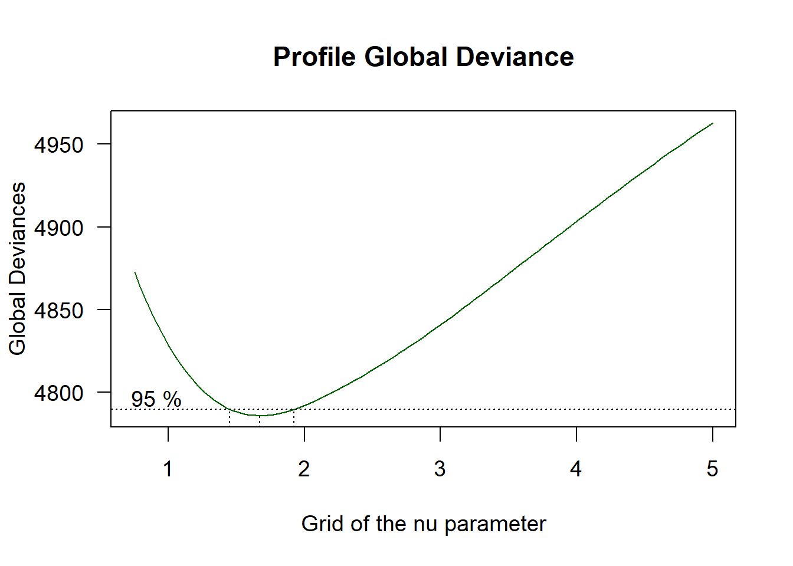
## ******************************************************************
## The Maximum Likelihood estimator is 1.672389
## with a Global Deviance equal to 4785.909
## A 95 % Confidence interval is: ( 1.451016 , 1.92469 )
## ******************************************************************Perfil da deviance para \(\nu\). As linhas tracejadas indicam a estimativa de máxima verossimilhança e os limites de confiança (95%) para \(\mu\).
## [1] 1.451016 1.924690Limites de 95% baseados no perfil da verossimilhança. Vamos ver como ficaria usando um intervalo do tipo Wald.
## ******************************************************************
## Family: c("PE", "Power Exponential")
##
## Call: gamlss(formula = y ~ poly(x, 2, raw = TRUE), sigma.formula = ~x,
## family = PE, data = abdom)
##
## Fitting method: RS()
##
## ------------------------------------------------------------------
## Mu link function: identity
## Mu Coefficients:
## Estimate Std. Error t value Pr(>|t|)
## (Intercept) -97.23838 8.68465 -11.197 < 2e-16 ***
## poly(x, 2, raw = TRUE)1 13.68755 0.74070 18.479 < 2e-16 ***
## poly(x, 2, raw = TRUE)2 -0.06065 0.01434 -4.229 2.71e-05 ***
## ---
## Signif. codes: 0 '***' 0.001 '**' 0.01 '*' 0.05 '.' 0.1 ' ' 1
##
## ------------------------------------------------------------------
## Sigma link function: log
## Sigma Coefficients:
## Estimate Std. Error t value Pr(>|t|)
## (Intercept) 1.378003 0.106881 12.89 <2e-16 ***
## x 0.041488 0.003728 11.13 <2e-16 ***
## ---
## Signif. codes: 0 '***' 0.001 '**' 0.01 '*' 0.05 '.' 0.1 ' ' 1
##
## ------------------------------------------------------------------
## Nu link function: log
## Nu Coefficients:
## Estimate Std. Error t value Pr(>|t|)
## (Intercept) 0.50002 0.08271 6.045 2.61e-09 ***
## ---
## Signif. codes: 0 '***' 0.001 '**' 0.01 '*' 0.05 '.' 0.1 ' ' 1
##
## ------------------------------------------------------------------
## No. of observations in the fit: 610
## Degrees of Freedom for the fit: 6
## Residual Deg. of Freedom: 604
## at cycle: 3
##
## Global Deviance: 4787.288
## AIC: 4799.288
## SBC: 4825.769
## ******************************************************************## [1] 1.402004 1.938920Repare que o método de Wald produz IC diferente daquele obtido pelo perfil da deviance. Neste caso, em que o perfil da deviance é bastante assimétrico, o intervalo de Wald não é recomendável.
## 2.5 % 97.5 %
## (Intercept) -114.25997861 -80.21678850
## poly(x, 2, raw = TRUE)1 12.23580480 15.13929389
## poly(x, 2, raw = TRUE)2 -0.08875731 -0.03253805## 2.5 % 97.5 %
## (Intercept) -15.64359190 18.39959820
## x 0.03418128 0.04879498## 2.5 % 97.5 %
## (Intercept) -16.52158 17.52161Por default, a função prof.dev avalia o perfil da deviance em apenas sete pontos de \(\nu\).
## interval G.deviances
## [1,] 0.750000 4872.782
## [2,] 1.458333 4789.488
## [3,] 2.166667 4798.396
## [4,] 2.875000 4833.599
## [5,] 3.583333 4877.097
## [6,] 4.291667 4921.429
## [7,] 5.000000 4962.846Vamos refinar, aumentando o número de pontos, para uma melhor visualização. Neste caso estamos aumentando para 20 pontos.
## ******************************************************************
## nu.start=( 0.75 )
## GAMLSS-RS iteration 1: Global Deviance = 4875.213
## GAMLSS-RS iteration 2: Global Deviance = 4872.778
## GAMLSS-RS iteration 3: Global Deviance = 4872.8
## GAMLSS-RS iteration 4: Global Deviance = 4872.812
## GAMLSS-RS iteration 5: Global Deviance = 4872.78
## GAMLSS-RS iteration 6: Global Deviance = 4872.801
## GAMLSS-RS iteration 7: Global Deviance = 4873.07
## GAMLSS-RS iteration 8: Global Deviance = 4872.855
## GAMLSS-RS iteration 9: Global Deviance = 4872.971
## GAMLSS-RS iteration 10: Global Deviance = 4872.918
## GAMLSS-RS iteration 11: Global Deviance = 4872.783
## GAMLSS-RS iteration 12: Global Deviance = 4872.815
## GAMLSS-RS iteration 13: Global Deviance = 4872.777
## GAMLSS-RS iteration 14: Global Deviance = 4872.782
## GAMLSS-RS iteration 15: Global Deviance = 4872.782
## ******************************************************************
## nu.start=( 0.9736842 )
## GAMLSS-RS iteration 1: Global Deviance = 4826.516
## GAMLSS-RS iteration 2: Global Deviance = 4826.518
## GAMLSS-RS iteration 3: Global Deviance = 4826.497
## GAMLSS-RS iteration 4: Global Deviance = 4826.499
## GAMLSS-RS iteration 5: Global Deviance = 4826.5
## ******************************************************************
## nu.start=( 1.197368 )
## GAMLSS-RS iteration 1: Global Deviance = 4802.011
## GAMLSS-RS iteration 2: Global Deviance = 4802.011
## ******************************************************************
## nu.start=( 1.421053 )
## GAMLSS-RS iteration 1: Global Deviance = 4790.508
## GAMLSS-RS iteration 2: Global Deviance = 4790.508
## ******************************************************************
## nu.start=( 1.644737 )
## GAMLSS-RS iteration 1: Global Deviance = 4787.289
## GAMLSS-RS iteration 2: Global Deviance = 4787.289
## ******************************************************************
## nu.start=( 1.868421 )
## GAMLSS-RS iteration 1: Global Deviance = 4789.602
## GAMLSS-RS iteration 2: Global Deviance = 4789.602
## ******************************************************************
## nu.start=( 2.092105 )
## GAMLSS-RS iteration 1: Global Deviance = 4795.719
## GAMLSS-RS iteration 2: Global Deviance = 4795.719
## ******************************************************************
## nu.start=( 2.315789 )
## GAMLSS-RS iteration 1: Global Deviance = 4804.507
## GAMLSS-RS iteration 2: Global Deviance = 4804.507
## ******************************************************************
## nu.start=( 2.539474 )
## GAMLSS-RS iteration 1: Global Deviance = 4815.19
## GAMLSS-RS iteration 2: Global Deviance = 4815.19
## ******************************************************************
## nu.start=( 2.763158 )
## GAMLSS-RS iteration 1: Global Deviance = 4827.216
## GAMLSS-RS iteration 2: Global Deviance = 4827.216
## ******************************************************************
## nu.start=( 2.986842 )
## GAMLSS-RS iteration 1: Global Deviance = 4840.173
## GAMLSS-RS iteration 2: Global Deviance = 4840.173
## ******************************************************************
## nu.start=( 3.210526 )
## GAMLSS-RS iteration 1: Global Deviance = 4853.749
## GAMLSS-RS iteration 2: Global Deviance = 4853.749
## ******************************************************************
## nu.start=( 3.434211 )
## GAMLSS-RS iteration 1: Global Deviance = 4867.695
## GAMLSS-RS iteration 2: Global Deviance = 4867.695
## ******************************************************************
## nu.start=( 3.657895 )
## GAMLSS-RS iteration 1: Global Deviance = 4881.811
## GAMLSS-RS iteration 2: Global Deviance = 4881.811
## ******************************************************************
## nu.start=( 3.881579 )
## GAMLSS-RS iteration 1: Global Deviance = 4895.936
## GAMLSS-RS iteration 2: Global Deviance = 4895.936
## ******************************************************************
## nu.start=( 4.105263 )
## GAMLSS-RS iteration 1: Global Deviance = 4909.936
## GAMLSS-RS iteration 2: Global Deviance = 4909.936
## ******************************************************************
## nu.start=( 4.328947 )
## GAMLSS-RS iteration 1: Global Deviance = 4923.704
## GAMLSS-RS iteration 2: Global Deviance = 4923.704
## ******************************************************************
## nu.start=( 4.552632 )
## GAMLSS-RS iteration 1: Global Deviance = 4937.153
## GAMLSS-RS iteration 2: Global Deviance = 4937.153
## ******************************************************************
## nu.start=( 4.776316 )
## GAMLSS-RS iteration 1: Global Deviance = 4950.217
## GAMLSS-RS iteration 2: Global Deviance = 4950.217
## ******************************************************************
## nu.start=( 5 )
## GAMLSS-RS iteration 1: Global Deviance = 4962.846
## GAMLSS-RS iteration 2: Global Deviance = 4962.846
## ******************************************************************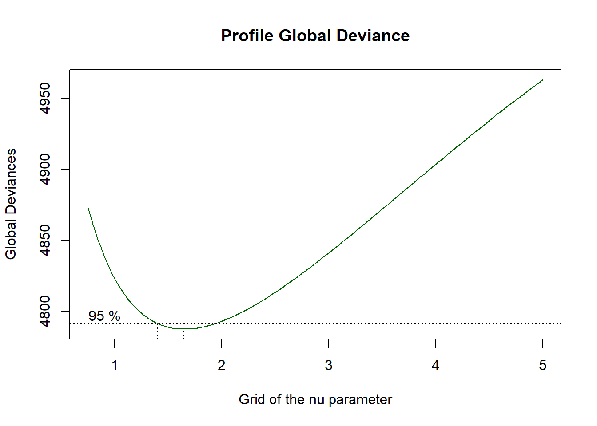
## ******************************************************************
## The Maximum Likelihood estimator is 1.648408
## with a Global Deviance equal to 4787.289
## A 95 % Confidence interval is: ( 1.401624 , 1.93682 )
## ******************************************************************Vamos visualizar o ajuste.
library(gamlss.util)
plotSimpleGamlss(y, x, model = ajustePE, data=abdom, x.val=seq(15, 40, 5),
ylim=c(0, 450), xlim=c(5, 45))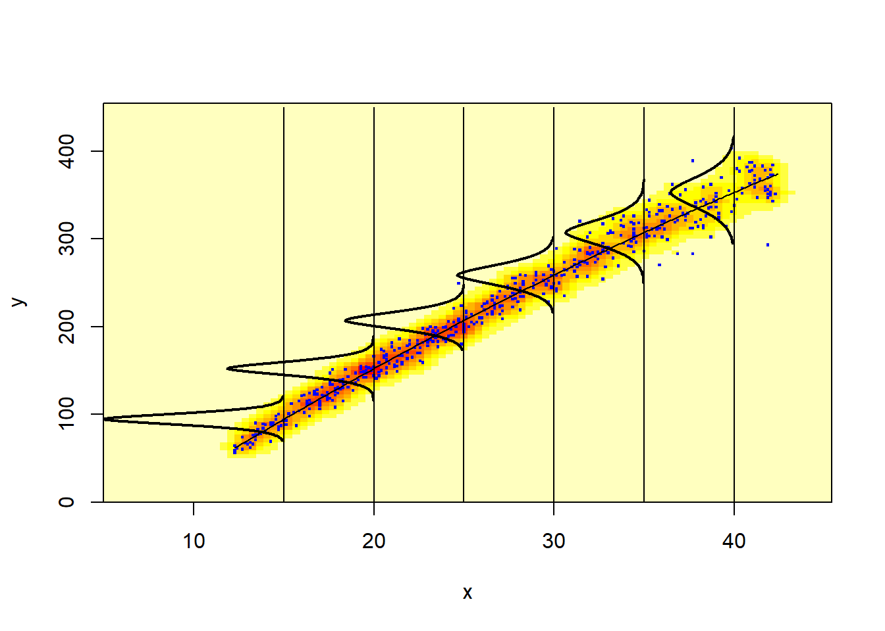
Agora vamos explorar o uso da função prof.term que, diferentemente da função prof.dev, pode ser aplicada a qualquer parâmetro no preditor de \(\mu\), \(\sigma\), \(\nu\) ou \(\tau\) (e não apenas a uma constante (intercepto)).
## GAMLSS-RS iteration 1: Global Deviance = 4861.035
## GAMLSS-RS iteration 2: Global Deviance = 4848.539
## GAMLSS-RS iteration 3: Global Deviance = 4848.539
## GAMLSS-RS iteration 1: Global Deviance = 4822.745
## GAMLSS-RS iteration 2: Global Deviance = 4822.652
## GAMLSS-RS iteration 3: Global Deviance = 4822.651
## GAMLSS-RS iteration 1: Global Deviance = 4802.923
## GAMLSS-RS iteration 2: Global Deviance = 4802.875
## GAMLSS-RS iteration 3: Global Deviance = 4802.875
## GAMLSS-RS iteration 1: Global Deviance = 4790.709
## GAMLSS-RS iteration 2: Global Deviance = 4790.689
## GAMLSS-RS iteration 3: Global Deviance = 4790.689
## GAMLSS-RS iteration 1: Global Deviance = 4787.404
## GAMLSS-RS iteration 2: Global Deviance = 4787.399
## GAMLSS-RS iteration 3: Global Deviance = 4787.399
## GAMLSS-RS iteration 1: Global Deviance = 4793.691
## GAMLSS-RS iteration 2: Global Deviance = 4793.69
## GAMLSS-RS iteration 1: Global Deviance = 4809.273
## GAMLSS-RS iteration 2: Global Deviance = 4809.261
## GAMLSS-RS iteration 3: Global Deviance = 4809.261
## GAMLSS-RS iteration 1: Global Deviance = 4832.936
## GAMLSS-RS iteration 2: Global Deviance = 4832.898
## GAMLSS-RS iteration 3: Global Deviance = 4832.897
## GAMLSS-RS iteration 1: Global Deviance = 4863.02
## GAMLSS-RS iteration 2: Global Deviance = 4862.935
## GAMLSS-RS iteration 3: Global Deviance = 4862.935
## GAMLSS-RS iteration 1: Global Deviance = 4897.864
## GAMLSS-RS iteration 2: Global Deviance = 4897.741
## GAMLSS-RS iteration 3: Global Deviance = 4897.74
## GAMLSS-RS iteration 4: Global Deviance = 4897.74
## GAMLSS-RS iteration 1: Global Deviance = 4936.133
## GAMLSS-RS iteration 2: Global Deviance = 4935.913
## GAMLSS-RS iteration 3: Global Deviance = 4935.906
## GAMLSS-RS iteration 4: Global Deviance = 4935.907
## GAMLSS-RS iteration 1: Global Deviance = 4976.604
## GAMLSS-RS iteration 2: Global Deviance = 4976.392
## GAMLSS-RS iteration 3: Global Deviance = 4976.386
## GAMLSS-RS iteration 4: Global Deviance = 4976.386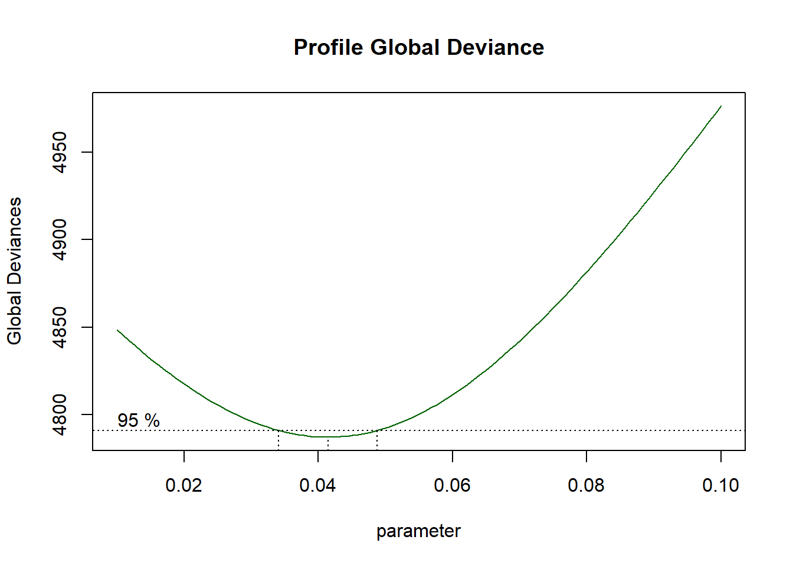
## ******************************************************************
## The Maximum Likelihood estimator is 0.04148137
## with a Global Deviance equal to 4787.289
## A 95 % Confidence interval is: ( 0.03412165 , 0.04880541 )
## ******************************************************************## GAMLSS-RS iteration 1: Global Deviance = 4861.035
## GAMLSS-RS iteration 2: Global Deviance = 4848.539
## GAMLSS-RS iteration 3: Global Deviance = 4848.539
## GAMLSS-RS iteration 1: Global Deviance = 4822.745
## GAMLSS-RS iteration 2: Global Deviance = 4822.652
## GAMLSS-RS iteration 3: Global Deviance = 4822.651
## GAMLSS-RS iteration 1: Global Deviance = 4802.923
## GAMLSS-RS iteration 2: Global Deviance = 4802.875
## GAMLSS-RS iteration 3: Global Deviance = 4802.875
## GAMLSS-RS iteration 1: Global Deviance = 4790.709
## GAMLSS-RS iteration 2: Global Deviance = 4790.689
## GAMLSS-RS iteration 3: Global Deviance = 4790.689
## GAMLSS-RS iteration 1: Global Deviance = 4787.404
## GAMLSS-RS iteration 2: Global Deviance = 4787.399
## GAMLSS-RS iteration 3: Global Deviance = 4787.399
## GAMLSS-RS iteration 1: Global Deviance = 4793.691
## GAMLSS-RS iteration 2: Global Deviance = 4793.69
## GAMLSS-RS iteration 1: Global Deviance = 4809.273
## GAMLSS-RS iteration 2: Global Deviance = 4809.261
## GAMLSS-RS iteration 3: Global Deviance = 4809.261
## GAMLSS-RS iteration 1: Global Deviance = 4832.936
## GAMLSS-RS iteration 2: Global Deviance = 4832.898
## GAMLSS-RS iteration 3: Global Deviance = 4832.897
## GAMLSS-RS iteration 1: Global Deviance = 4863.02
## GAMLSS-RS iteration 2: Global Deviance = 4862.935
## GAMLSS-RS iteration 3: Global Deviance = 4862.935
## GAMLSS-RS iteration 1: Global Deviance = 4897.864
## GAMLSS-RS iteration 2: Global Deviance = 4897.741
## GAMLSS-RS iteration 3: Global Deviance = 4897.74
## GAMLSS-RS iteration 4: Global Deviance = 4897.74
## GAMLSS-RS iteration 1: Global Deviance = 4936.133
## GAMLSS-RS iteration 2: Global Deviance = 4935.913
## GAMLSS-RS iteration 3: Global Deviance = 4935.906
## GAMLSS-RS iteration 4: Global Deviance = 4935.907
## GAMLSS-RS iteration 1: Global Deviance = 4976.604
## GAMLSS-RS iteration 2: Global Deviance = 4976.392
## GAMLSS-RS iteration 3: Global Deviance = 4976.386
## GAMLSS-RS iteration 4: Global Deviance = 4976.386## ******************************************************************
## The Maximum Likelihood estimator is 0.04148137
## with a Global Deviance equal to 4787.289
## A 99 % Confidence interval is: ( 0.03173139 , 0.05108619 )
## ******************************************************************Mais adiante vamos explorar usos alternativos e recursos adicionais dessas funções.